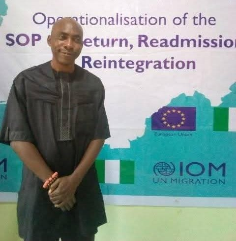

Leading the strategic direction and coordination of the South East Migration Dialogue. Responsible for overall planning, stakeholder engagement, and ensuring the successful implementation of dialogue objectives in alignment with the 2025 National Migration Policy.

Supporting the Chairman in coordinating committee activities and ensuring effective execution of the dialogue. Plays a key role in subcommittee formation and operational oversight for the migration program.
Serving as Secretary of the Local Organizing Committee, responsible for documentation, correspondence, and minutes of meetings. Key liaison between the LOC and CSOnetMADE national secretariat.

Coordinating regional efforts across the five South East states and ensuring alignment with national migration policy objectives. Leading advocacy initiatives and stakeholder engagement at the zonal level.

Leading migration governance initiatives in Abia State. Successfully secured the buy-in of the Wife of the Abia State Governor, galvanizing political will for the dialogue.

Coordinating migration-related activities and stakeholder engagement in Anambra State. Working to institutionalize state-level migration governance structures.

As Chief Host, Her Excellency provides distinguished patronage and support for the South East Migration Dialogue, demonstrating the state government's commitment to addressing migration governance and development issues in the region.
Providing technical guidance and ensuring alignment with national migration governance frameworks. Supporting the institutionalization of state-level migration coordination structures under the 2025 National Migration Policy.
Providing international best practices and technical support on migration governance, assisted voluntary return, and reintegration programs. Contributing to data collection and analysis on migration trends.
Responsible for delegate mobilization and outreach across the South East states
Handling media relations, publicity, and documentation of the dialogue
Managing venue arrangements, catering, and event logistics
Responsible for drafting the dialogue communique and reports
Managing budget, sponsorship, and financial matters
Engaging private sector for sustainable funding mechanisms
Interested in contributing to the South East Migration Dialogue? Get in touch with us.
Contact Us